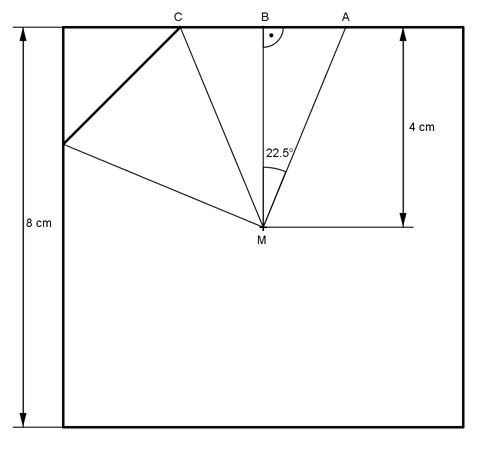

Aufgabe 96 Eine quadratische Stahlstange ist 65 cm lang mit einer Quadratseite von 8 cm. Sie wird so bearbeitet, dass aus dem Quadrat ein regelmäßiges Achteck wird. Wie groß ist der Materialverlust m bei einer Dichte von 7,2 g/cm³?  Das regelmäßige Achteck besteht aus 8 Dreiecken MAC mit der Höhe MB = 4 cm und der Grundseite CA. Der Mittelpunktswinkel CMA eines regelmäßigen Achtecks beträgt 360°/8 = 45°. ∠BMA = 45°/2 = 22,5° BA = CA/2 Im Dreieck MAB gilt: BA tan 22,5° = ----- |*BA MB MB = BA * tan 22,5° = 4 cm * 0,4142 = 1,657 cm CA = 2 * BA = 2 * 1,657 cm = 3,314 cm m = (VQuadratstahl - VAchteckstahl) * р 3,314 cm * 4 cm m = (8² cm² * 65 cm - 8 * ------------------ * 65 cm) * 7,2 g/cm³ 2 m = (4 160 cm³ - 3 447 cm³) * 7,2 g/cm³ m = 5 133 g = 5,12 kg